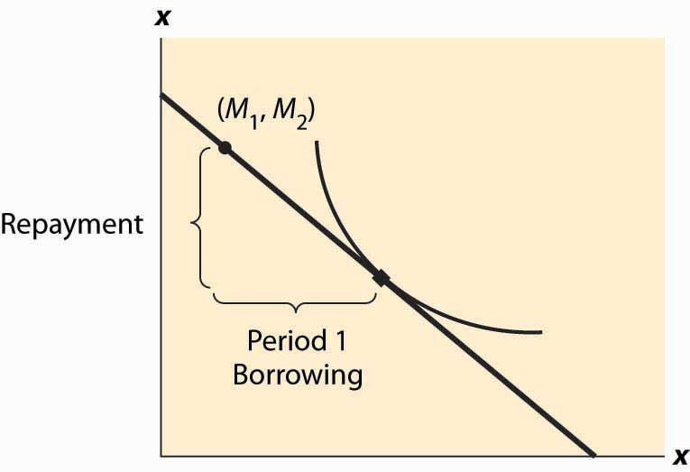
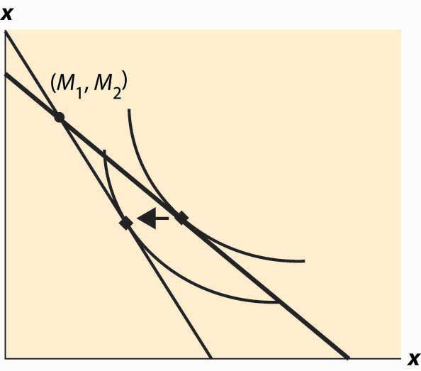
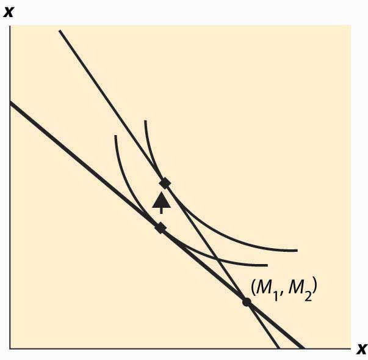
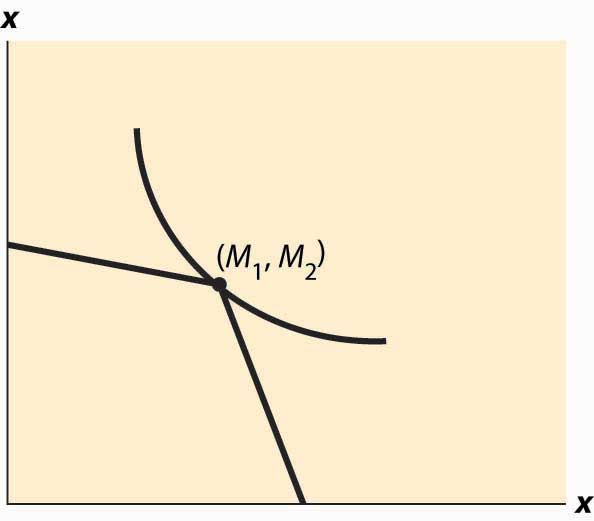
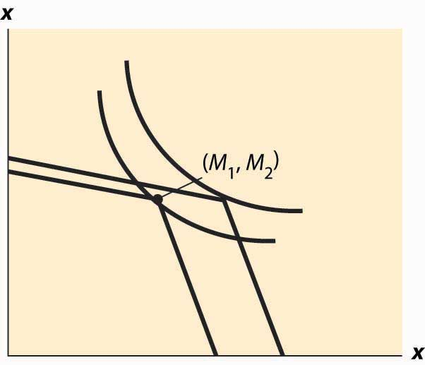

The consumption of goods doesn’t take place in a single instance, but over time. How does time enter into choice? We’re going to simplify the problem a bit and focus only on consumption, setting aside working for the time being. Let x1 be consumption in the first period and x2 in the second period. Suppose the value of consumption is the same in each period, so that u(x1, x2) = v(x1) + δv(x2), where δ is called the rate of “pure” time preference. The consumer is expected to have income M1 in the first period and M2 in the second. There is a market for lending and borrowing, which we assume has a common interest rate r.
The consumer’s budget constraint, then, can be written (1 + r)(M1 – x1) = x2 – M2.
This equation says that the net savings in Period 1, plus the interest on the net savings in Period 1, equals the net expenditures in Period 2. This is because whatever is saved in Period 1 earns interest and can then be spent in Period 2; alternatively, whatever is borrowed in Period 1 must be paid back with interest in Period 2. Rewriting the constraint: (1 + r)x1 + x2 = (1 + r)M1 + M2.
This equation is known as the intertemporal budget constraintThe budget constraint that allows for borrowing or lending.—that is, the budget constraint that allows for borrowing or lending. It has two immediate consequences. First, 1 + r is the price of Period 2 consumption in terms of Period 1 consumption. Thus, the interest rate gives the relative prices. Second, the relevant income is the permanent incomeThe present value of the income stream., which is the present value of the income stream. Clearly a change in income that leaves the present value of income the same should have no effect on the choice of consumption.
Once again, as with the labor supply, a change in the interest rate affects not just the price of consumption but also the budget for consumption. In other words, an increase in the interest rate represents an increase in budget for net savers but a decrease in budget for net borrowers.
As always, we rewrite the optimization problem to eliminate one of the variables, to obtain
Thus, the first-order conditions yield
This condition says that the marginal value of consumption in Period 1, equals the marginal value of consumption in Period 2, times the interest factor. That is, the marginal present values are equated. Note that the consumer’s private time preference, δ, need not be related to the interest rate. If the consumer values Period 1 consumption more than does the market, so that δ(1 + r) < 1, then that is, the consumer consumes more in Period 1 than in Period 2.As usual, we are assuming that utility is concave, which in this instance means that the second derivative of v is negative, and thus the derivative of v is decreasing. In addition, to ensure an interior solution, it is useful to require what are called the Inada conditions: and Similarly, if the consumer’s discount of future consumption is exactly equal to the market discount, δ(1 + r) = 1, the consumer will consume the same amount in both periods. Finally, if the consumer values Period 1 consumption less than the market, δ(1 + r) > 1, the consumer will consume more in Period 2. In this case, the consumer is more patient than the market.
Figure 13.3 Borrowing and lending
Whether the consumer is a net lender or borrower depends not just on the preference for earlier versus later consumption but also on incomes. This is illustrated in Figure 13.3 "Borrowing and lending". In this figure, the consumer’s income mostly comes in the second period. As a consequence, the consumer borrows in the first period and repays in the second period.
The effect of an interest rate increase is to pivot the budget constraint around the point (M1, M2). Note that this point is always feasible—that is, it is feasible to consume one’s own endowment. The effect of an increase in the interest rate is going to depend on whether the consumer is a borrower or a lender. As Figure 13.4 "Interest rate change" illustrates, the net borrower borrows less in the first period—the price of first-period consumption has risen and the borrower’s wealth has fallen. It is not clear whether the borrower consumes less in the second period because the price of second-period consumption has fallen, even though wealth has fallen, too—two conflicting effects.
An increase in interest rates is a benefit to a net lender. The lender has more income, and the price of Period 2 consumption has fallen. Thus the lender must consume more in the second period, but only consumes more in the first period (lends less) if the income effect outweighs the substitution effect. This is illustrated in Figure 13.5 "Interest rate increase on lenders".
Figure 13.4 Interest rate change
Figure 13.5 Interest rate increase on lenders
The government, from time to time, will rebate a portion of taxes to “stimulate” the economy. An important aspect of the outcome of such a tax rebate is the effect to which consumers will spend the rebate, versus save the rebate, because the stimulative effects of spending are thought to be larger than the stimulative effects of saving.This belief shouldn’t be accepted as necessarily true; it was based on a model that has since been widely rejected by the majority of economists. The general idea is that spending creates demand for goods, thus encouraging business investment in production. However, saving encourages investment by producing spendable funds, so it isn’t at all obvious whether spending or saving has a larger effect. The theory suggests how people will react to a “one-time” or transitory tax rebate, compared to a permanent lowering of taxes. In particular, the budget constraint for the consumer spreads lifetime income over the lifetime. Thus, for an average consumer who might spend a present value of $750,000 over a lifetime, a $1,000 rebate is small potatoes. On the other hand, a $1,000 per year reduction is worth $20,000 or so over the lifetime, which should have 20 times the effect of the transitory change on the current expenditure.
Tax rebates are not the only way that we receive one-time payments. Money can be found, or lost, and we can have unexpected costs or windfall gifts. From an intertemporal budget constraint perspective, these transitory effects have little significance; and thus the theory suggests that people shouldn’t spend much of a windfall gain in the current year, or cut back significantly when they have a moderately sized, unexpected cost.
As a practical matter, most individuals can’t borrow at the same rate at which they lend. Many students borrow on credit cards at very high interest rates and obtain a fraction of that in interest on savings. That is to say, borrowers and lenders face different interest rates. This situation is readily identified in Figure 13.6 "Different rates for borrowing and lending". The cost of a first-period loan is a relatively high loss of x2, and similarly the value of first-period savings is a much more modest increase in second-period consumption. Such effects tend to favor “neither a borrower nor a lender be,” as Shakespeare recommends, although it is still possible for the consumer to optimally borrow in the first period (e.g., if M1 = 0) or in the second period (if M2 is small relative to M1).
Figure 13.6 Different rates for borrowing and lending
Differences in interest rates cause transitory changes in income to have much larger effects than the intertemporal budget constraint would suggest. This may go a long way toward explaining why people don’t save much of a windfall gain and similarly suffer a lot temporarily, rather than a little for a long time, when they have unexpected expenses. This is illustrated in Figure 13.7 "The effect of a transitory income increase".
Figure 13.7 The effect of a transitory income increase
